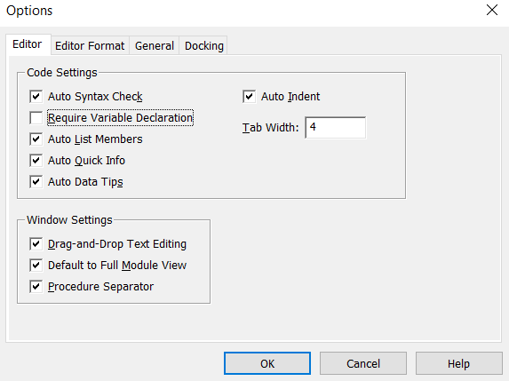
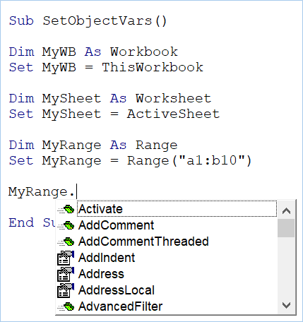
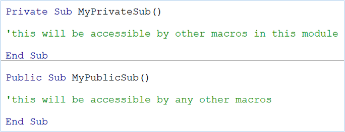
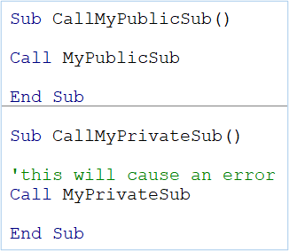
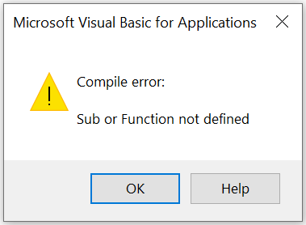

In computing, we are constantly manipulating values stored in memory. Binding values to variables is how objects are created (or destroyed) and labeled, and the properties and methods made accessible.
A variable is a piece of info encapsulated in a name-to-value(s) association; it is data stored in memory during code execution. As suggested by the term, the value is dynamic, and can change over time. Variables reduce the need for repetition, or manual input, and can be used to label items with plainer language.
Declaring a variable announces its presence in computer memory, though in many cases it is optional. If you go ahead and use a variable without declaring it, by default Excel will attempt to create it for you. But, declaring your variables is recommended, as it ensures more consistent usage, and aside from often being necessary for functionality, is important for things like debugging and validation. The upper and lower case letters of a variable will match the cases used in the declaration, so I declare in 'CamelCase', but type in lower case, and catch typos when I notice that the variable name I just typed remained entirely in lower-case.
Variables can be declared using the Dim statement, such as Dim MyVar. However, it is also typical to specify the data-type (discussed below) using As, such as Dim MyVar As String.
Data types tell the machine how to interpret the format of a variable, as well as how much memory is required. Some intuitively understood ones are String (text), Date, and Currency.
Numerical types are more diverse; Integer and Long are for whole-number storage, but because of the amount of memory allocated, Integer can only be used for values between -32,768 and 32,767, whereas Long can hold much greater values, positive or negative,
for whole numbers.
To include decimal-figures, there is a type called Decimal, a type called Double, and as mentioned above, Currency. A complete breakdown of common data types, including the differences in bytes used, can be found on the Microsoft Docs site:
https://docs.microsoft.com/en-us/office/vba/Language/Reference/User-Interface-Help/data-type-summary
Option explicit is a setting which forces you to declare your variables, meaning undeclared variables will not be recognized, and will instead produce an error, interrupting code execution.
To enable it in the immediate module, type Option Explicit at the top of the code window (outside of any macros). To set it as your default, in the VB Editor go to Tools > Options, and in the first tab of the window which pops up, put a check mark next to “Require Variable Declaration”, and press OK. Any modules you create from that point forward will have "Option Explicit" at the top, unless you decide to disable it.

There are Object variables, as well as names for particular classes of object-variables, like Workbook, Worksheet, and Range. This allows the values in memory to be referred to more efficiently, by the identity of the object rather than the name property it possesses. To set an object variable equal to some object, we use the Set keyword. Once the object variable is set, 'Intellisense' tooltips will appear after typing it followed by a period in the code.

Type Variant can be recognized as whatever data type is expected at the time, and so it's type is variable, as well as it's value(s).
Arrays - lists and tables of data in memory - do not have a data type called array. Rather, their data-type represents the elements within, but with a special form of declaration, such as Dim MyList(1 to 6) As String, or Dim MonthNumArray(1 to 12, 1 to 2) As Variant. Arrays are the subject of a later section.
Variables have a scope in which they are recognized. For example, if declared within a sub-procedure, the recognition of that variable is limited to that sub-procedure. If Option Explicit is in effect, then attempting to use that variable elsewhere will likely produce an error.
Module-level scope is achieved by placing the declaration at the top of a module, outside of any subs or functions. It can then be read by any macros within that module.
There exists Public and Private scope as well. Using the Dim keyword is the same as using Private. What the keyword Public does is make a variable accessible all throughout the project.
This also applies to Subs and Functions; the default scope is Private, but Public may be assigned by preceding the sub or function name.
Below, I populate Module1 with a sub of private-level scope and a sub of public-level scope.

Then, I create a Module2 and populate it with two macros, one each for calling the private and public subs created in Module1.

There are no issues calling MyPublicSub, but running the sub which calls upon MyPrivateSub results in the following error, because of the Private scope.

Using Public can be handy when referencing a very common variable or function. When not truly necessary, you may find that the containment provided by module and procedure-level
scope as a default helps to better stay organized and avoid conflicts. I let variables and procedures graduate to public scope only as needed.
Sometimes, you do not need a variable's value to be dynamic, as you only intend to use it for one thing. For that, a constant may be used instead.
Say you have a list of currency amounts, and that some will have a factor applied against them due to late payment. The variable holding the amounts must have a dynamic value, but the factor may be static.
Or say you are looping through a list of files in a single folder; the variable holding the file names must be dynamic, but the name of the folder may be entered as a constant.
Declaring items as a constant rather than variable can help to ensure usage as intended. Like a variable, it also has value in letting you assign a plain-language name.
Declaring a constant is like declaring a variable, but with the word Const instead of Dim, and with the value-assignment occurring at the same time, such as Const MyNum As Integer = 5.